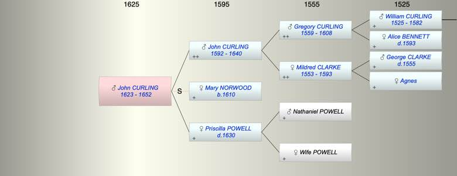

| [Index] |
| John CURLING (1623 - 1652) |
|  |
| b. 1623 at Fordwich, Kent |
| d. 1652 aged 29 |
| Parents: |
| John CURLING (1592 - 1640) |
| Priscilla POWELL ( - 1630) |
| Events in John CURLING (1623 - 1652)'s life | |||||
| Date | Age | Event | Place | Notes | Src |
| 1623 | John CURLING was born | Fordwich, Kent | Note 1 | ||
| 1630 | 7 | Death of mother Priscilla POWELL | Note 2 | ||
| 1640 | 17 | Death of father John CURLING (aged 48) | Note 3 | ||
| 1652 | 29 | John CURLING died | not found | ||
| Note 1: baptised 13 Apr 1623 Fordwich ex Ancestry |
| Note 2: buried 14 Jan 1631 St Laurence wife of John ex FMP PR |
| Note 3: Buried St Laurence 2 Jan 1641 ex FMP PR |
| Personal Notes: |
|
will [PCC 51 Bowyer, PROB11/220, f. 409].
John Curling of Great Allhallows London, gent, in good health. To my mother-in-law [step-mother] Mrs Mary Curling £10. To my sister Hanna Curling £15 at age 21 or marriage. Unto my brother Nicholas Curling £10 at age 21. To my sister Porter £15. To my sister Bridgett the wife of Stephen Harding £10. To the children that now is of my sister Harding £15 for their advantage till they come of age, equally divided between them. To my brother William Curling all my right &c in all my lands. Said William Curling, executor. My brother John Porter and my cousin Henry Johnson overseers, to whom £5 each. Dated 6 March 1649[/50]. Only witness: William Dugdale. Proved 5 August 1652 by William Curling, the executor.. The will suggests he died unmarried . |
| Created on a Mac™ using iFamily for Mac™ on 8 Oct 2023 |